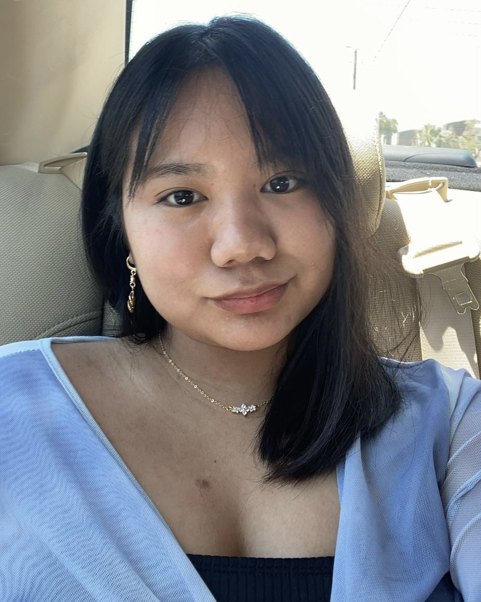

About Me
Hi, my name is Jennifer Rattana. I began my journey in graphic design after graduating high school in 2021. As a newcomer to the field, I’m still exploring where life and design will take me, but I’m steadily honing my skills and learning more every day.
I grew up in a household full of culinary parents and grandparents, and I’m proud to be the first in my family to attend college. In my family, I’m known as the creative one, although I can be a bit stubborn at times. My curiosity and creativity have always pushed me to explore new ways to express myself.
Programs I've Worked With:
- Illustrator
- Indesign
- Photoshop
- Clip Studio Paint
- Blender
Outside of design, I enjoy puzzles and games like chess. To me, graphic design is like a puzzle, trying to fit different pieces together until everything aligns and makes sense. My fascination with scrapbooking and journals inspired me to pursue graphic design, as it felt like a natural extension of my love for organizing and creating visually appealing pieces.